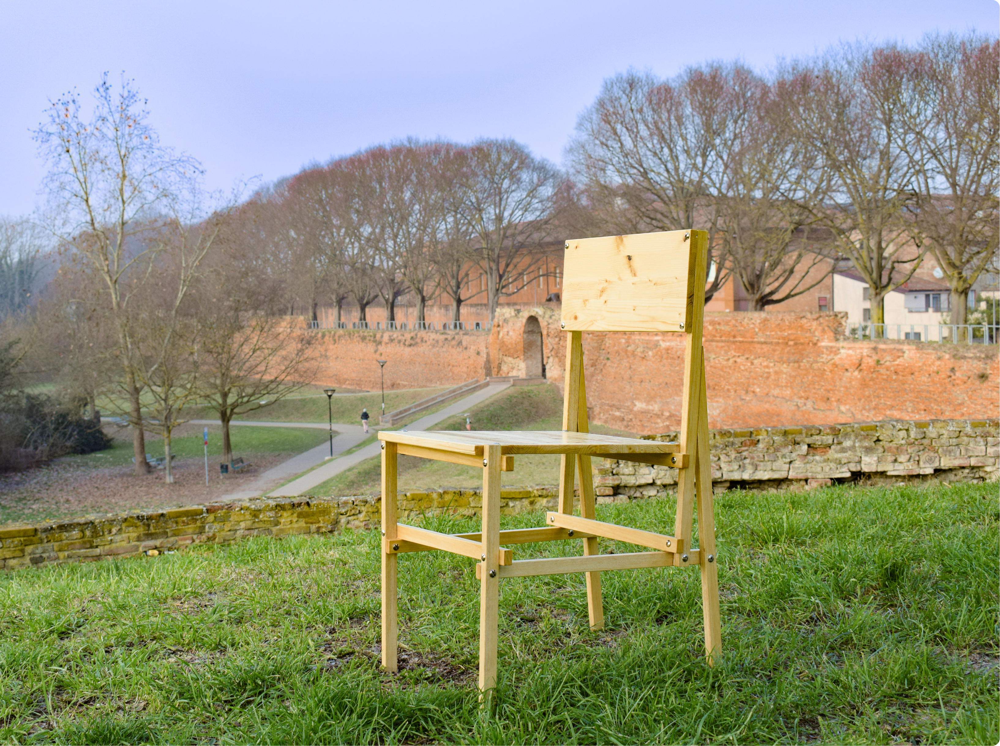
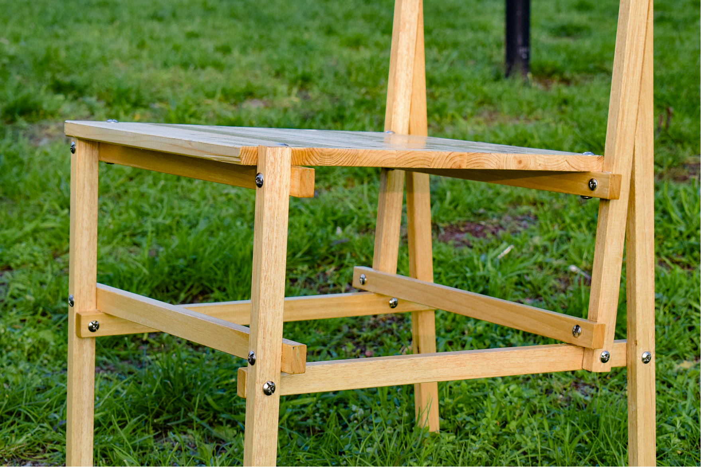
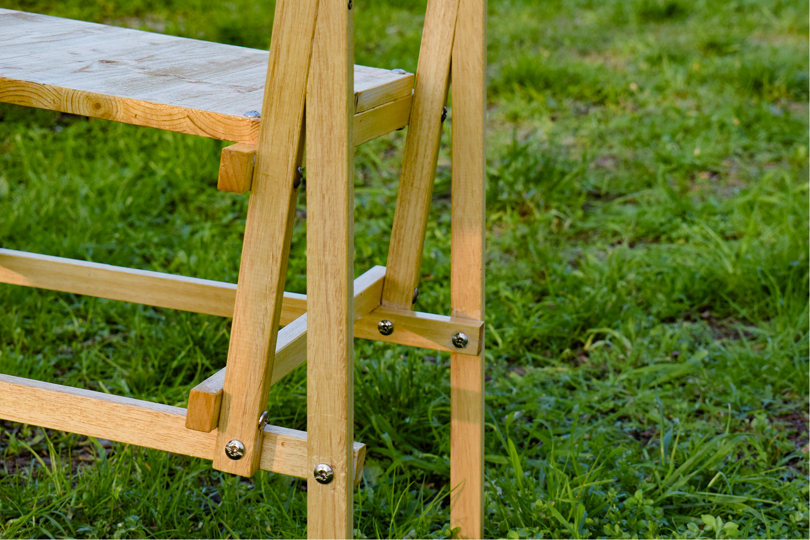
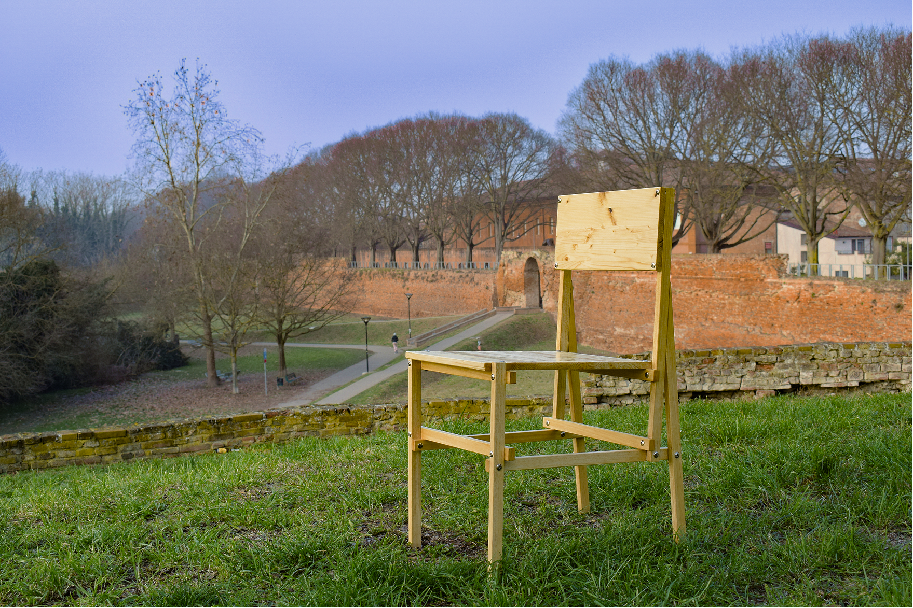
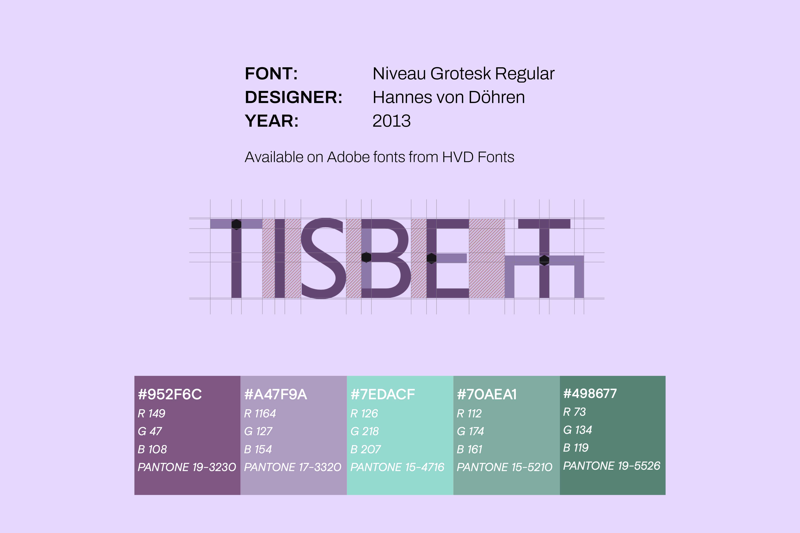
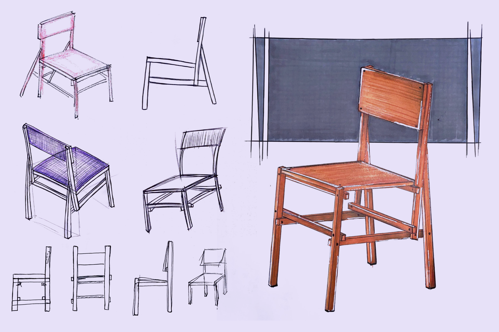
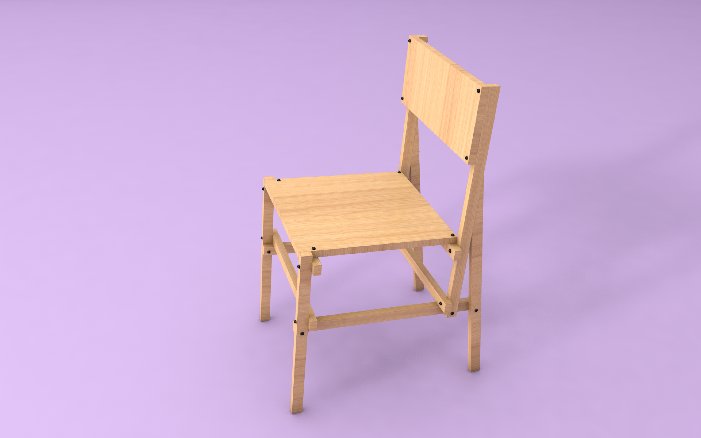
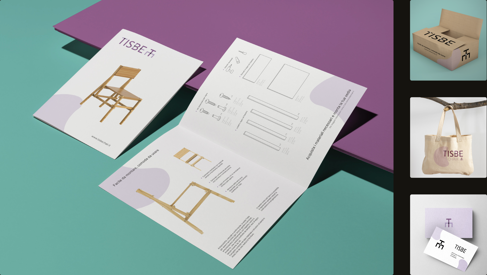
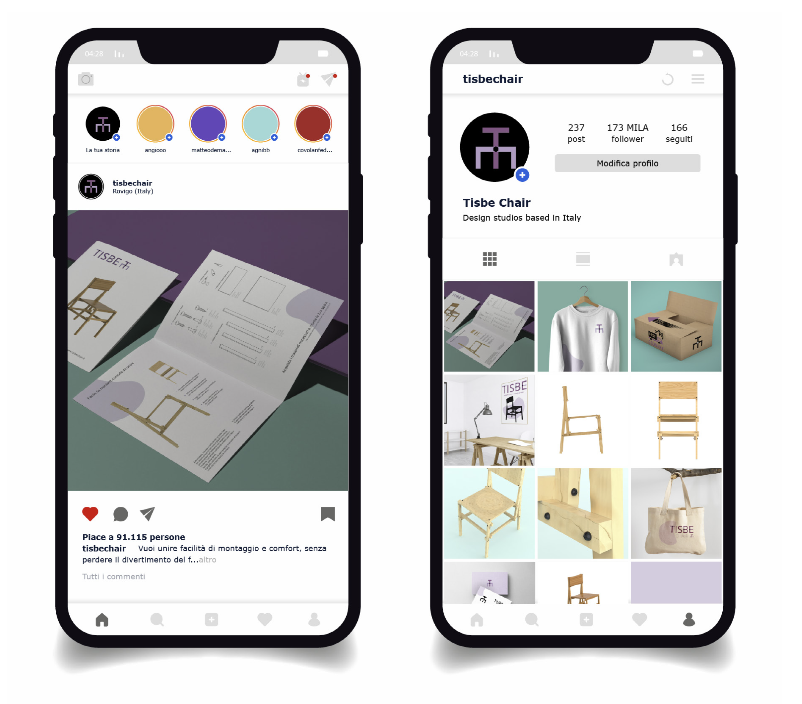

Product Design · 2022
Tisbe Chair
A self-producible seat for Open Gardens events, in eco-sustainable materials
The Tisbe concept was born to create a self-producing seat made up of a few essential elements for its construction, simple even for the most amateur in the field. The seat is made of 12 slats with a 3 × 2 cm section (of variable length) and two types of screws — buried screws of two different lengths, and standard wood screws.
The supporting structure is simple but original, characterised by a triangle shape on the back that makes it stable and solid. The material is ash wood — chosen for its excellent mechanical properties (hardness and flexibility) and its soft colour, a shade from light blond to pink.
The manufacturing process is straightforward — the wood can be planed, sawed and assembled with extreme ease, making it accessible even outside a professional workshop.

Section 01 · Chair Details
12 slats, 2 screws, one assembly.
The full geometry resolves around a triangulated back. Each slat is dimensioned to nest into the next, and assembly is documented in a single sheet of instructions — no tools beyond a screwdriver required.
The piece is meant to be reproduced by anyone, anywhere, with locally-sourced wood. Sketches and rendered variations were produced to validate the proportions before prototyping.


Section 02 · Outdoor Setting
Designed for the Open Garden.
Tisbe is intended for short-duration public events — open gardens, pop-up markets, neighbourhood gatherings. It folds back into a kit at the end of the day and ships flat.
The renderings show the chair siting in conversation with the landscape, not against it.

Section 03 · Logo, Graphics & Sketches
A palette borrowed from the mulberry.
The brand identity asks: how can self-production create a seating system suitable for an Open Gardens event? Using eco-sustainable materials, easily available and assembled, restoring a sense of comfort capable of enhancing the surrounding environment.
The colours in the palette are inspired by botany — in particular by the mulberry plant and its fruit. Known for its delicious fruits similar to blackberries and for the history that links it to the silkworm, the mulberry (Morus L., family Moraceae) lent its purples and greens to the system.



Section 04 · Communication Strategy
A small package that ships flat.
The Tisbe seat, thanks to its usability and assembly, was designed for a wide range of users. It's an economic and simple seat contained in a small packaging including easy-to-understand instructions.
The seat is on sale on the e-commerce site and in some design fairs and events — where users can find the digital file, the paper brochure with the assembly instructions, the packaging containing all the pre-cut materials, the screws and bolts, and various products branded with the logo.

